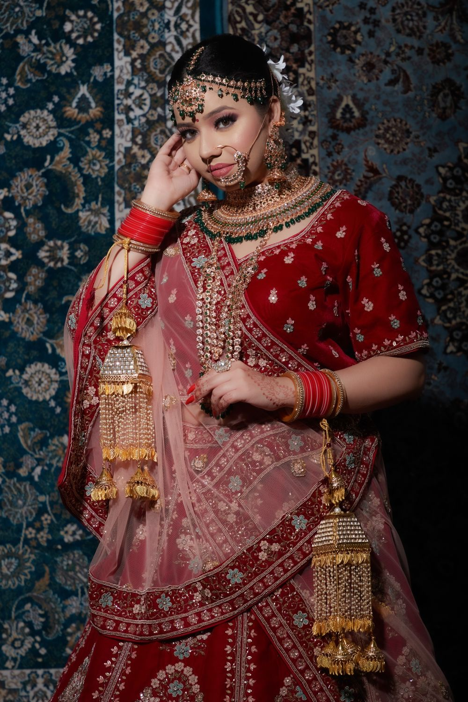

The grandmother's saree, worn again
Made to measure · Raw silk & 1987 Banarasi saree · Zardozi border · 9 weeks · ₹86,000 · Lucknow, December wedding
- Asked
- Sana Verma arrived with her grandmother's 1987 Banarasi saree in a steel trunk and one condition: the saree had to be *in* the wedding lehenga, not copied, not "inspired by". The silk had split along two fold lines.
- Did
- We unpicked the saree over two days, mapped the splits, and cut the skirt panels so the woven border ran unbroken at the hem. The splits were backed with matching raw silk and hidden inside panel seams; a new zardozi border was worked only where the original pallu had worn thin. The choli was cut from the saree's blouse piece.
- Outcome
- Delivered at the final fitting in week 9, two weeks before the wedding. The leftover saree length — just under a metre — was hemmed as a dupatta for Sana's mother, at no charge, because it was her mother's saree too.
"Anaya refused to cut until she had drawn the whole skirt on paper with the splits marked. My grandmother cried at the fitting. The lehenga is in my cupboard now, wrapped in the same trunk."